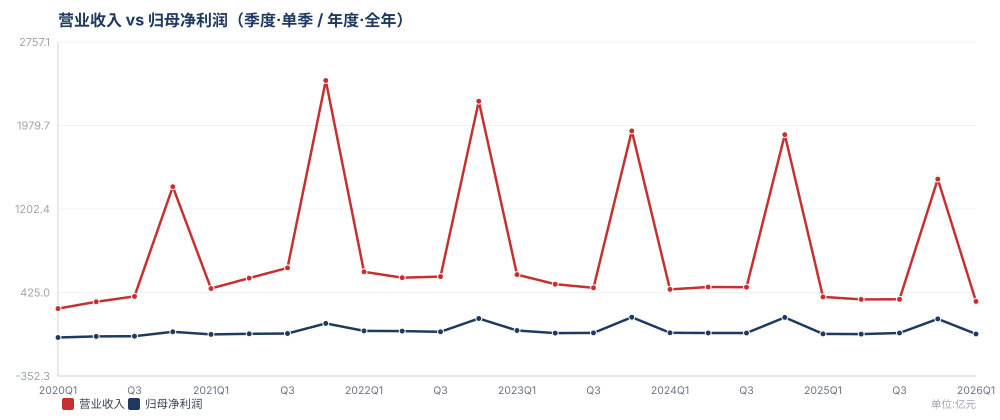
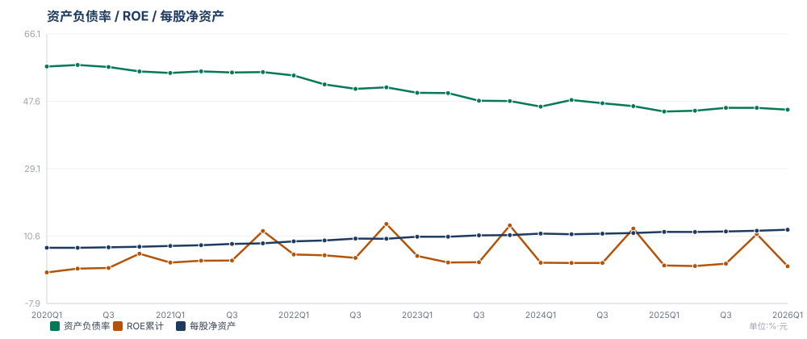

八大维度监测看板
1
煤炭产销与资源储量
稳定核心基本盘，储产比超 57 年，产量稳定性决定业绩下限。
自产商品煤产量1.35 亿吨-1.8%
商品煤总销量2.56 亿吨-10.2%
自产 / 贸易煤结构1.36 / 1.20 亿吨
在产矿井核定产能≈1.7 亿吨
剩余可采储量≈139 亿吨
在建新增产能里必400 + 苇子沟240 万吨
传导逻辑：自产煤是利润底盘，产量决定收入规模与固定成本摊薄；储产比与在产/在建产能决定中长期供给弹性与业绩下限。长协托底下，现货波动对综合售价的传导约 0.5~0.6，故港口现货为盈利弹性核心锚。
2
价格与成本
假设吨煤售价与完全成本剪刀差，是盈利弹性的核心驱动。
秦皇岛5500现货价（中性假设）≈650 元/吨
下水煤长协占比≈75%
自产煤吨售价448 元-10.2%
自产煤吨完全成本251.51 元-10.7%
自产煤吨毛利≈197 元
长协履约率≥90%
传导逻辑：吨毛利 = 吨售价 − 吨完全成本。75% 长协按月浮动定价，使综合售价对港口现货弹性约 0.5~0.6；成本端受开采条件与人工物料影响，下行弹性弱于售价。现货每 ±50 元/吨，综合传导约 ±27 亿元毛利（见情景假设）。
3
业务结构与板块协同
稳定煤-电-化-新一体化，弱化纯周期属性，提升现金流稳定性。
煤化工主要产品产量606 万吨
煤化工毛利（估）≈30 亿元
煤炭自给率（化工用煤）>90%
尿素销量242.3 万吨+18.9%
电力发电量180 亿千瓦时+34.7%
装备制造产值92.1 亿元
传导逻辑：化工/电力以自产低价煤为原料，自给率>90% 形成成本护城河；煤电、煤化协同将波动的煤价转化为稳定的化工品/电力现金流，弱化纯周期属性，提升整体抗风险能力。
4
财务表现
已验证高分红央企核心指标：盈利质量、现金流覆盖与资本结构。
营业收入341.89 亿-10.9%
归母净利润（A股口径）≈38.44 亿元
经营性现金流净额57.47 亿元
资产负债率45.31%
ROE / 分红率2.34% / 30~35%
每股净资产12.38 元
传导逻辑：营收、归母、现金流、负债率、ROE、每股净资产构成财务质量六维。资产负债率低位（45%）与经营现金流覆盖，支撑高分红与资本开支；ROE 随煤价周期波动，是估值与股东回报的核心锚。
5
政策与行业环境
事件驱动保供稳价、安监环保、进口冲击与碳中和构成政策四角。
保供稳价政策强度长协机制强化
长协签约率要求高位维持
安监环保限产2025 杜绝较大以上事故
进口煤量影响压制沿海煤价
碳中和/需求中长期十五五规划研讨期
传导逻辑：政策四角中，保供稳价+长协托底需求与价格下限；安监限产收缩供给、支撑煤价；进口煤形成沿海价格天花板；碳中和压制长期需求预期。四者共振决定煤价波动区间与业绩可预见性。
6
产能扩张与资本开支
在建重点项目集中投放期，Capex 进度决定未来量与成本曲线。
新建矿井进度里必400 / 苇子沟240
大海则煤矿1500 万吨爬坡
榆林二期聚烯烃90 万吨，2026 底打通
图克液态阳光绿氢甲醇10 万吨级，2026 内投产
2030 自产煤目标1.5 亿吨 / 核定 2 亿吨
传导逻辑：在建与爬坡项目是中期量增来源，里必/苇子沟/大海则贡献增量产量，榆林二期与图克绿氢延伸煤化一体化价值链条；Capex 高峰期内压制自由现金流，投产转固后放量摊薄成本、增厚盈利。
7
市场与客户
高频电力长协托底、钢铁需求波动、日耗库存是高频验证锚。
长协客户结构电力央企为主
沿海八省火电日耗迎峰度夏/冬波动
电厂库存天数警戒：>30 天
钢厂高炉开工率影响焦煤/喷吹煤
出口及转运能力政策与运力跟踪
传导逻辑：电力长协客户提供需求托底，使销量可预见；火电日耗/电厂库存是高频需求验证锚，库存高于 30 天预警需求走弱；钢厂开工牵动焦煤/喷吹煤，构成冶金煤需求弹性。
8
估值与股东回报
随行情央企市值管理框架下，PE/PB、股息率与回购增持动向。
PE（2026E）≈11.3x
PB（每股净资产锚）12.08 元
股息率（静态）≈2.2%
分红率30~35%（关注能否 40%+）
回购与增持央企市值管理框架下
传导逻辑：估值由 业绩中枢 × 行业 PE 决定，股息率 = 每股分红 / 股价，分红率与回购增持构成股东回报锚；央企市值管理强化下，低估值 + 高分红 + 潜在回购是估值修复催化。
长期趋势专区
各业务维度基于财报/官方数据的历史趋势图，点击下方折叠项展开；数据源自 A股财报（季/年）及公司公告，按卡片归类。
4 财务表现


数据截至 2026-03-31 · 图1 营业收入 vs 归母净利润；图2 资产负债率 / ROE累计 / 每股净资产（合并口径·A股财报）
趋势图
高频数据跟踪清单
| 频率 | 跟踪项 | 数据源 | 用途 / 触发 |
|---|---|---|---|
| 日 | 秦皇岛/曹妃甸 5500 现货价；沿海八省电厂日耗与库存 | CCTD、煤炭资源网、中电联 | 煤价与需求日内变化，突破阈值即预警 |
| 日 | 行情 PE/PB、股价成交量、回购/增持公告 | 东方财富/腾讯财经、交易所公告 | 估值与市值管理信号 |
| 周 | 环渤海动力煤指数、焦煤/焦炭期货(JM/J)、钢厂高炉开工率 | 大商所、我的钢铁、CCTD | 现货周度趋势、钢铁需求景气 |
| 周 | 港口煤炭库存、坑口价格 | 煤炭资源网、易煤网 | 供需松紧与价格传导 |
| 月 | 公司月度经营数据（产量、销量、售价简况） | 上交所/港交所临时公告 | 产销方向，先于季报 |
| 月 | 全国原煤产量、进口煤量、聚烯烃/尿素价格 | 统计局、海关、石化资讯 | 行业供需与化工弹性 |
| 月 | 火电发电量、水泥/粗钢产量（下游景气） | 统计局、中电联、钢协 | 验证需求端假设 |
季度验证清单
① 产销与价格
- 自产商品煤产量 vs 年度计划进度（>25%/50%/75%）
- 商品煤销量、自产/贸易结构
- 自产煤吨售价、吨成本、吨毛利 vs 情景假设
- 长协履约比例是否稳定
② 板块与财务
- 煤炭/煤化工/电力分部毛利与占比
- 煤化工产量、聚烯烃/尿素价格弹性
- 营收、归母净利润 vs 高频预判
- 经营现金流、资产负债率、ROE
③ 资本与回报
- 资本开支进度 vs 预算
- 重点项目建设/试产节点
- 分红方案、分红率变化
- 回购/增持、机构持仓变动
验证动作：每季度用实际值回填「情景假设」中的弹性参数（吨售价对港口现货弹性、化工品价格弹性），使下一期中性的业绩中枢更贴近真实。
情景假设框架
以秦皇岛5500港口现货年均价为核心锚变量（自产煤75%长协、长协按月浮动定价，故综合吨售价对现货弹性约 0.5~0.6）。以下为示意性区间，需按季度验证后的真实弹性校准。
悲观情景
现货 ≈ 550 元/吨
- 需求弱+进口冲击，煤价下行
- 自产煤吨售价≈410、吨毛利≈160
- 化工品价格低迷、弹性弱
- 预估归母净利润 ≈ 120~140 亿
中性情景
现货 ≈ 650 元/吨
- 供需紧平衡、长协托底
- 自产煤吨售价≈448（持平2025）、吨毛利≈197
- 化工小幅回暖
- 预估归母净利润 ≈ 180~210 亿
乐观情景
现货 ≈ 750 元/吨
- 地缘扰动+保供偏紧，煤价上行
- 自产煤吨售价≈490、吨毛利≈238
- 聚烯烃随原油上涨弹性释放
- 预估归母净利润 ≈ 230~260 亿
速算弹性（用于高频跟踪快速映射）
| 变量变动 | 对税前毛利影响 | 对归母净利润 / EPS |
|---|---|---|
| 自产煤吨售价 +10 元/吨 | ≈ +13.5 亿元（1.35亿吨） | ≈ +10 亿元 / EPS +0.08 元 |
| 秦皇岛5500现货 +50 元/吨（综合传导） | ≈ +27 亿元（弹性0.5~0.6） | ≈ +20 亿元 / EPS +0.15 元 |
| 聚烯烃价格 +100 元/吨 | ≈ +1.2 亿元（120万吨） | ≈ +0.9 亿元 / EPS +0.007 元 |
| 尿素价格 +100 元/吨 | ≈ +1.75 亿元（175万吨产能） | ≈ +1.3 亿元 / EPS +0.01 元 |
情景切换触发条件：当港口现货连续 1 个月处于某一情景区间且伴随日耗/库存印证时，切换为该情景作为基准并重新评估估值（PE/PB/股息率）。
数据源目录
| 类别 | 来源与获取方式 |
|---|---|
| 公司公告 | 上交所(601898)、港交所(01898)、巨潮资讯网、公司官网投资者关系——定期报告、月度经营数据、分红/回购/项目公告 |
| 行业价格 | CCTD 中国煤炭市场网、秦皇岛煤炭网、环渤海动力煤价格指数、我的钢铁(焦煤/焦炭)、大商所 JM/J 期货 |
| 供需数据 | 国家统计局（原煤产量/发电量/粗钢）、海关总署（进口煤）、中电联（电厂日耗库存）、中国煤炭工业协会 |
| 行情与估值 | 东方财富、腾讯财经、Wind、同花顺——PE/PB/股息率/机构持仓/ESG评级 |
| 政策与研报 | 发改委/能源局官网、应急部（安监）、券商研究所（中金/中信/国君等煤炭行业报告） |
月度监测日志模板
| 指标 | 本月值 | 上月值 | 同比 | 预警? | 备注 |
|---|---|---|---|---|---|
| 秦皇岛5500现货 | |||||
| 自产商品煤产量 | |||||
| 商品煤总销量 | |||||
| 煤化工产量 | |||||
| 聚烯烃价格 | |||||
| 火电日耗(八省) | |||||
| 港口库存 | |||||
| 进口煤量 | |||||
| PE / PB | |||||
| 情景判定 | |||||